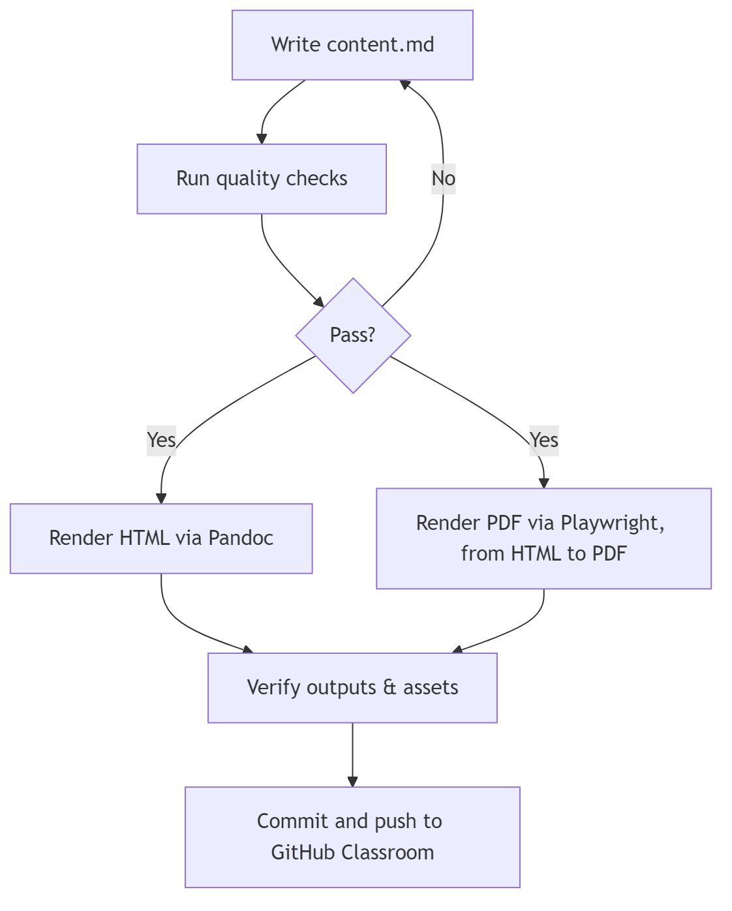
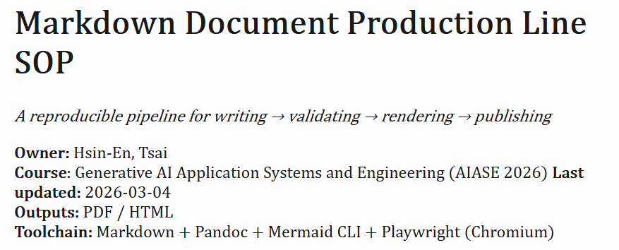
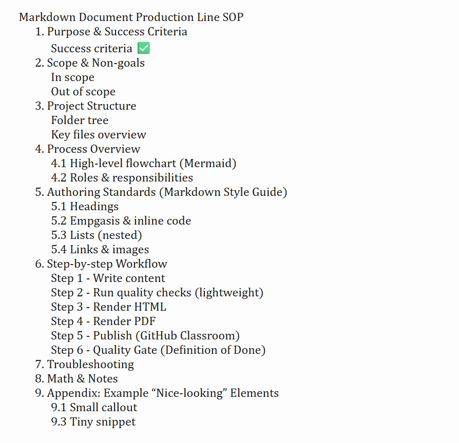

A reproducible pipeline for writing → validating → rendering → publishing
Owner: Hsin-En, Tsai
Course: Generative AI Application Systems and
Engineering (AIASE 2026) Last updated: 2026-03-04
Outputs: PDF / HTML
Toolchain: Markdown + Pandoc + CSS + Mermaid CLI +
Playwright (Chromium)
This SOP defines a document production line that converts a single Markdown source into professional outputs (PDF/HTML) with repeatable commands and quality checks.
Design principle: Decouple content from rendering.
Write once, render many times.
AIASE2026-HW1/
├── content.md
├── README.md
├── requirements.txt (optional)
└── output/
├── output.html
└── output.pdf| File/Folder | Purpose | Must? |
|---|---|---|
content.md |
Main document source (single source of truth) | ✅ Yes |
README.md |
Reproduction guide (install + commands + notes) | ✅ Yes |
requirements.txt |
Python deps (only if you use Python steps) | 🟣 Optional |
output/ |
Rendered artifacts | ✅ Yes |

content.mdUsing consistent hierarchy: # for title →
## for sections → ### for subsections.
inline code for commands, filenames, flags

Tip: Put screenshots into output/ and reference them relatively.
Edit content.md with a Markdown editor (VS Code
recommended).
Checklist - At least 6 top-level sections - At least 2 tables - At least 2 code blocks (with language tags) - Mermaid diagram present - Task list present
It’s am extra engineering touch.
# tools/check_outputs.py
from pathlib import Path
required = [
Path("content.md"),
Path("output/output.html"),
Path("output/output.pdf"),
]
missing = [p for p in required if not p.exists()]
if missing:
raise SystemExit(f"Missing files: {missing}")
print("OK: required files exist.")mkdir -p output
pandoc content.md -s --toc -o output/output.htmlStyling:
assets/style.cssis applied via Pandoc-cto improve readability of headings, tables, code blocks, and blockquotes.
Verification
node tools/print_pdf.jsPDF is generated from output/output.html using headless Chromium (Playwright) for better reproducibility (no LaTeX required).
Verification
git add content.md README.md output/
git commit -m "HW1: reproducible markdown production line"
git pushoutput/| Symptom | Likely cause | Fix |
|---|---|---|
pandoc is not recognized |
Pandoc not installed / PATH not refreshed | Install Pandoc, then reopen terminal and run
pandoc --version |
| Mermaid image not showing in HTML/PDF | Image path is wrong (HTML is in output/) or image not
committed |
Put images in output/ and reference as
 (NOT
output/flowchart.png); commit the image files |
mmdc is not recognized |
Mermaid CLI not installed | Install: npm install -g @mermaid-js/mermaid-cli, then
reopen terminal |
| Mermaid parse error | Node labels contain special characters (e.g., ->,
parentheses) |
Simplify labels (e.g., use HTML to PDF and avoid
parentheses) |
PDF build fails with
Cannot find module 'playwright' |
Playwright not installed in project | Run: npm init -y then
npm install playwright |
| PDF build fails with browser missing | Chromium not installed for Playwright | Run: npx playwright install chromium |
| PDF output looks different from VS Code preview | Different renderers/styles | Use the generated output/output.html as the source for
PDF (Playwright keeps HTML/PDF consistent) |
# 1) Mermaid (.mmd) -> PNG
mmdc -i assets/flowchart.mmd -o output/flowchart.png -b transparent -s 2
# 2) Markdown -> HTML
pandoc content.md -s --toc -o output/output.html
# 3) HTML -> PDF (no LaTeX required)
node tools/print_pdf.jsA simple cost model for rendering iterations: Ttotal = N ⋅ (Tedit + Trender + Tverify)
Where: - N = number of iterations - Tedit = editing time - Trender = rendering time - Tverify = verification time
✅ Best practice: keep
content.mdcontent-focused and move instructions toREADME.md.
| Item | Value |
|---|---|
| Renderer | Pandoc |
| Outputs | HTML, PDF |
| Reproducibility | One-command build |
pandoc content.md -s --toc -c ../assets/style.css -o output/output.html
node tools/print_pdf.js